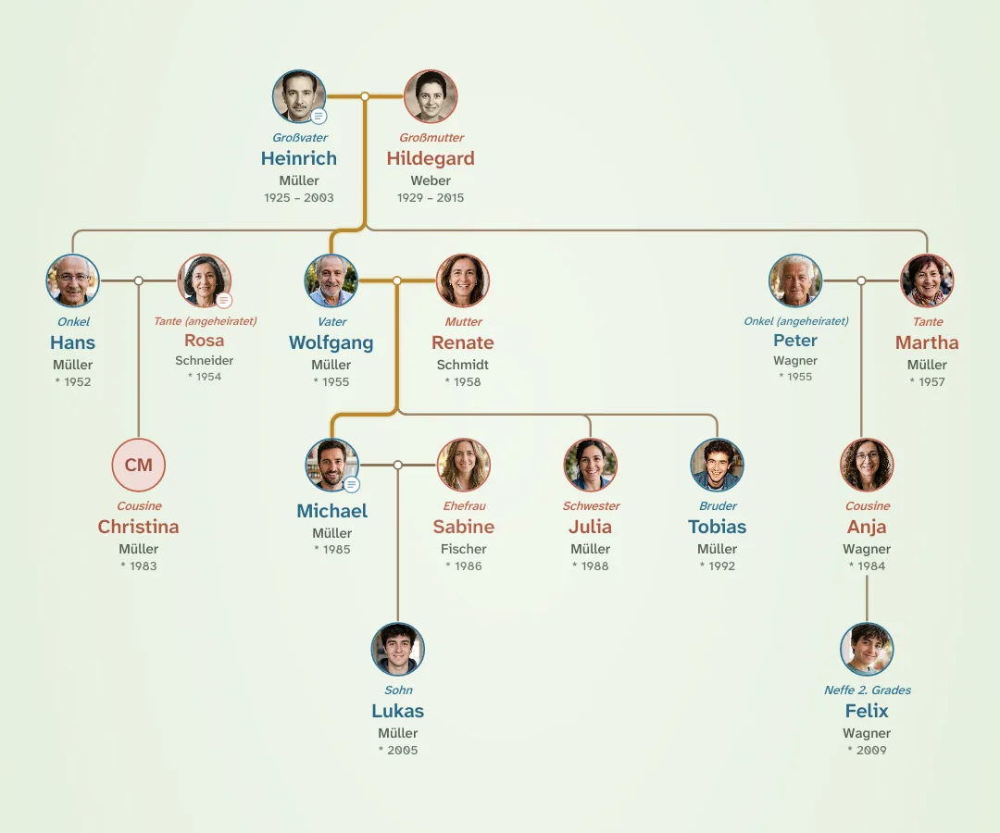

Verwandtschaftsgrad berechnen: Cousin 2. Grades, Großonkel und Großneffe
Ist das Kind deines Cousins dein Cousin oder dein Neffe? Und was ist ein Onkel 2. Grades? Wähle, wo euer gemeinsamer Vorfahr steht, und der Rechner nennt dir die Verwandtschaft und ihren Grad.
Der gemeinsame Vorfahr ist die Person, von der ihr beide abstammt. Bei einem Cousin sind es eure Großeltern, bei einem Cousin 2. Grades eure Urgroßeltern. Stammt einer vom anderen ab (ein Enkel, eine Urgroßmutter), wähle „Ich“ oder „Die andere Person“.
Wie die Verwandten heißen
Es kommt darauf an, wie viele Generationen jeder von euch bis zum gemeinsamen Vorfahren hat:
- Geschwister haben dieselben Eltern.
- Cousins und Cousinen haben dieselben Großeltern: Eure Eltern sind Geschwister.
- Cousins 2. Grades haben dieselben Urgroßeltern: Eure Eltern sind Cousins.
- Großonkel oder Großtante: Bruder oder Schwester eines Großelternteils. Du bist sein Großneffe oder seine Großnichte.
- Onkel 2. Grades: der Cousin deines Vaters oder deiner Mutter. Du bist sein Neffe 2. Grades.
Das Kind deines Cousins ist also weder dein Cousin noch dein Neffe, sondern dein Neffe 2. Grades. Deine Kinder und seine Kinder dagegen sind Cousins 2. Grades.
Verwandtschaftstabelle
Suche in der Zeile, wer der gemeinsame Vorfahr für dich ist, und in der Spalte, wer er für die andere Person ist. Im Feld steht, wie diese Person mit dir verwandt ist (weiblich: Tante, Cousine, Großnichte…).
| Für dich ↓ · für die andere Person → | Eltern | Großeltern | Urgroßeltern | Ururgroßeltern | Urururgroßeltern |
|---|---|---|---|---|---|
| Eltern | Bruder | Neffe | Großneffe | Urgroßneffe | Ururgroßneffe |
| Großeltern | Onkel | Cousin | Neffe 2. Grades | Großneffe 2. Grades | Urgroßneffe 2. Grades |
| Urgroßeltern | Großonkel | Onkel 2. Grades | Cousin 2. Grades | Neffe 3. Grades | Großneffe 3. Grades |
| Ururgroßeltern | Urgroßonkel | Großonkel 2. Grades | Onkel 3. Grades | Cousin 3. Grades | Neffe 4. Grades |
| Urururgroßeltern | Ururgroßonkel | Urgroßonkel 2. Grades | Großonkel 3. Grades | Onkel 4. Grades | Cousin 4. Grades |
Der Verwandtschaftsgrad nach dem BGB
Rechtlich (§ 1589 BGB) bestimmt sich der Grad nach der Zahl der vermittelnden Geburten: Man zählt von einer Person hinauf bis zum gemeinsamen Vorfahren und wieder hinunter zur anderen. Deshalb sind Cousins im Alltag „ersten Grades“, im Gesetz aber im vierten Grad verwandt.
| Grad | Verwandte |
|---|---|
| 1. | Eltern und Kinder |
| 2. | Großeltern, Enkel und Geschwister |
| 3. | Urgroßeltern, Urenkel, Onkel, Tanten, Neffen und Nichten |
| 4. | Cousins und Cousinen, Großonkel, Großtanten, Großneffen und Großnichten |
Mit der Familie des Ehepartners (Schwiegereltern, Schwager…) ist man verschwägert, im selben Grad wie der Partner mit ihnen verwandt ist.
Dein Stammbaum, mit der Verwandtschaft von jedem
In Ramo musst du nichts ausrechnen: Schalte „Verwandtschaft“ ein, und jede Karte im Stammbaum zeigt, wie diese Person mit der Hauptperson verwandt ist (Vater, Tante, Cousin, Nichte, Schwager, Schwiegersohn…), auch angeheiratet.

Der Einstieg ist kostenlos, und den Stammbaum teilst du als PDF mit der ganzen Familie, damit jeder sieht, wo er steht.
Weitere Ratgeber